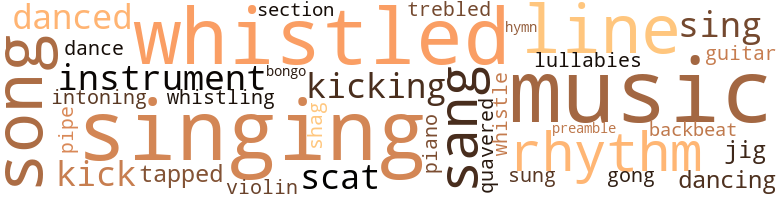

Seventh Heaven, by Bennett, Hal (1976)
74 music-related terms matched in this text.
Most frequent terms in this topic: music (9); singing (8); whistled (7); line (5); sang (3)
backbeat.n.01
Definition: a loud steady beat
| word | sentence |
|---|---|
| backbeat | The jukebox was sounding with a steady bass , a sleazy backbeat . |
bongo.n.01
Definition: a small drum; played with the hands
| word | sentence |
|---|---|
| bongo | Bill and Jason joined in , while Quevedo beat out a slow bongo rhythm on his thigh . |
dance.n.01
Definition: an artistic form of nonverbal communication
| word | sentence |
|---|---|
| dance | He tightened the muscles in his butt , making his dick dance in her hand . |
dance.v.02
Definition: move in a pattern; usually to musical accompaniment; do or perform a dance
| word | sentence |
|---|---|
| dancing | He was so happy he felt like singing , like dancing a jig up and down Seventh Avenue where people were walking in shirtsleeves and cotton dresses in the welcome warmth of May . |
dance.v.03
Definition: skip, leap, or move up and down or sideways
| word | sentence |
|---|---|
| danced | Despite himself , the nigger in Bill Kelsey rose up and danced with delirious glee . |
| danced | Visions of dollar bills danced in his head . |
gong.n.01
Definition: a percussion instrument consisting of a metal plate that is struck with a softheaded drumstick
| word | sentence |
|---|---|
| gong | He heard the multiple voice as clearly as a gong struck inside his head ; the sound vibrated throughout his whole body . |
guitar.n.01
Definition: a stringed instrument usually having six strings; played by strumming or plucking
| word | sentence |
|---|---|
| guitar | Yet , the voice - and its own echo , vibrating in his head like the plucked string of a guitar - made good sense . |
hymn.n.01
Definition: a song of praise (to God or to a saint or to a nation)
| word | sentence |
|---|---|
| hymn | The cooling sun was like a hymn subtly hummed by the pungent , nigger wind . |
jig.n.01
Definition: music in three-four time for dancing a jig
| word | sentence |
|---|---|
| jig | He was so happy he felt like singing , like dancing a jig up and down Seventh Avenue where people were walking in shirtsleeves and cotton dresses in the welcome warmth of May . |
kick.v.04
Definition: kick a leg up
| word | sentence |
|---|---|
| kicking | He turned off the television - man , sometimes he felt like kicking Barbara Walters in her baby-maker - and reached for his jeans . |
| kick | A friend of mine back in Alabama , he told me to put rubber boots on the goat 's hind legs , so he ca n't kick you . |
| kicking | Feet were also valid for kicking novices under the table in places like " 21 " or the Playboy Club , if someone like Bill unconsciously picked his nose while he was there with Maria . |
| kick | He wanted to snatch his arm from her , knock her fucking head ofi his shoulder , kick her up and down the street like you 'd kick a mad dog . |
lullaby.n.01
Definition: a quiet song intended to lull a child to sleep
| word | sentence |
|---|---|
| lullabies | Almost . . . because a young woman 's voice sang lullabies to him until he fell asleep . |
music.n.01
Definition: an artistic form of auditory communication incorporating instrumental or vocal tones in a structured and continuous manner
| word | sentence |
|---|---|
| music | As for the Porto Ricans , they hardly voted at all ; aside from pissing in the vestibule , their forte was racing up and down Seventh Avenue in shiny cars , making babies , playing loud music , and shouting Spanish at each other as though all of them were deaf . |
| music | Water ran gently , perpetually , in urinals propped against the near wall , coated with the gold of a million young bladders , like soft music in a series of porcelain coffins . |
| music | He thought about his father , Heim 's father , himself , and of Herm with all those goddamn pancakes and that church music on the radio . |
| music | An old Billie Holiday record played on the jukebox ; and the melancholy music added to Bill 's sense that everybody here was playing a game that he had either forgotten or never known . |
| music | The music - Al Green , Gladys Knight , Smokey Robinson - was good and funky . |
| music | " I just love soul music , " she said . |
| music | " My madam plays that kind of music all the time . |
| music | Surely not the fact of funeral music at a wake . |
| music | And now Bill understood why Viola had turned off the music . |
musical_instrument.n.01
Definition: any of various devices or contrivances that can be used to produce musical tones or sounds
| word | sentence |
|---|---|
| instrument | He was holding an instrument about four feet long that resembled a giant pair of scissors with ends shaped like saucers with shallow indentations . |
| instruments | But he could n't move . . . because the thing in his hand was one of those black instruments that Mr. Willis had used to crush the bulls ' nuts . |
piano.n.01
Definition: a keyboard instrument that is played by depressing keys that cause hammers to strike tuned strings and produce sounds
| word | sentence |
|---|---|
| piano | He fought them , the multiple sounds , like chords played on a piano . |
pipe.n.04
Definition: a tubular wind instrument
| word | sentence |
|---|---|
| pipe | His johnson was like a lead pipe in his jeans . |
preamble.n.01
Definition: a preliminary introduction to a statute or constitution (usually explaining its purpose)
| word | sentence |
|---|---|
| preamble | It means Niggers Are Taking Over " After that little preamble , now he was ready to tell her about juju , all about his mother , and Aunt Keziah , and Miss Page sticking pins in a doll . |
rhythm.n.04
Definition: the arrangement of spoken words alternating stressed and unstressed elements
| word | sentence |
|---|---|
| rhythms | To counteract this discrimination , the black Negro establishes elaborate systems of slang and ' soul ' and * sultry rhythms that are designed to exclude not only the white man , but the white Negro as well . |
| rhythm | Black power , black humor , black rhythm are just one part of this counter-reaction . |
| rhythm | Bill and Jason joined in , while Quevedo beat out a slow bongo rhythm on his thigh . |
scat.n.01
Definition: singing jazz; the singer substitutes nonsense syllables for the words of the song and tries to sound like a musical instrument
| word | sentence |
|---|---|
| scat | He set fire to another cigarette and settled back in the scat . |
| scat | She leaned across the scat and kissed him . |
section.n.01
Definition: a self-contained part of a larger composition (written or musical)
| word | sentence |
|---|---|
| section | He has the quaintest little church down in the colored section . |
shag.v.01
Definition: dance the shag
| word | sentence |
|---|---|
| shag | He 'd better shag ass out of here . |
sing.v.02
Definition: produce tones with the voice
| word | sentence |
|---|---|
| singing | Although the sun was cold and bright - it had changed now to the color of pale egg yolk as it rose higher in the sky - Bill felt it singing down into his very toes . |
| sung | And yet he was happy , like a song sung by the wind . |
| sang | Almost . . . because a young woman 's voice sang lullabies to him until he fell asleep . |
| sing | Both ears were filled with the voice of some woman somewhere sing - ing songs of delicious sex . |
| singing | The choir was already singing down at the baptismal site . |
| singing | The choir was singing loud and strong for the purification of this important sinner ; and she swung her hips as she waded through the cold , clear water to her husband . |
| singing | The old Temptations were singing about evolution , revolution . |
| sang | The Temptations sang : And the band played on . |
| singing | After the second bottle , somewhere near Perth Amboy on the Garden State Parkway , Viola began singing " That Old Rugged Cross " in what might have been an uneven baritone . |
| sang | The old Italian had the strength of a young man ; and he and Bill drank wine and sang songs and worked together with all the exuberance of two virile men in a never-ending orgy with the land , the flowers , the sultry grass . |
| sing | But he went looking for another kind of job , something outdoors where he could use his muscles , and breathe fresh air , and feel the magnificence of sun and wind , and even the cold , sing praises to the strength and youth of his body . |
singing.n.01
Definition: the act of singing vocal music
| word | sentence |
|---|---|
| singing | He was so happy he felt like singing , like dancing a jig up and down Seventh Avenue where people were walking in shirtsleeves and cotton dresses in the welcome warmth of May . |
| singing | He turned the radio on to a station where a black choir was singing and clapping with marvelous gusto . |
| singing | In a way , it reminded Bill of the old days in Burnside , second Sunday in August , when people came to church for the week-long revival , bringing baskets of food that they spread on tables under the trees for the feast after the singing and preaching . |
song.n.01
Definition: a short musical composition with words
| word | sentence |
|---|---|
| song | Then recordings were played , at ear-splitting volume , that appealed to all the people : Aretha Franklin and James Brown for the blacks , " Cielito Undo " for the Porto Ricans ( although the song is Mexican , of whom there was not a single one in Anthony Homes ) , and " The Star-Spangled Banner " for the Italians , followed by " Ritorno a Sorrento , " notwithstanding the fact that most of the Italians , or their ancestors , had come from such places as Naples , Genoa , or , occasionally , Rome , those from the Eternal City all claiming to be personal friends of the Pope . |
| song | And yet he was happy , like a song sung by the wind . |
| songs | Both ears were filled with the voice of some woman somewhere sing - ing songs of delicious sex . |
| song | The choir was humming that stupid song like a large hive of bumblebees . |
| songs | The old Italian had the strength of a young man ; and he and Bill drank wine and sang songs and worked together with all the exuberance of two virile men in a never-ending orgy with the land , the flowers , the sultry grass . |
tapdance.v.01
Definition: dance and make rhythmic clicking sounds by means of metal plates nailed to the sole of the dance shoes
| word | sentence |
|---|---|
| tapped | Then she put on some old records by Enrico Caruso , and tapped out time to the scratchy , screechy tenor with a stick of pot on the sofa arm . |
tone.v.01
Definition: utter monotonously and repetitively and rhythmically
| word | sentence |
|---|---|
| intoning | ... He rammed his dick like a sturdy other arm against Mae 's thigh as he began intoning the formula of purification : " I baptize you in the name of the Father . . . " She certainly could feel his dick against her , and her eyes opened in mild surprise , replaced almost at once by doubt and the beginnings of frightened desire as he carried her back , farther back , curving her hips toward him at the same time as though to open her pussy and then split it wide open with dick there in the baptismal creek with the church members and the choir and nearly every other nigger in Burnside looking on . |
treble.v.01
Definition: sing treble
| word | sentence |
|---|---|
| trebled | But actually , he was talking to the voices that had been strangely silent since they trebled Now ! |
tune.n.01
Definition: a succession of notes forming a distinctive sequence
| word | sentence |
|---|---|
| line | But the changes were so dramatic , so completely out of line with what he had thought the community would become , that he set about trying to find out what it was that had turned the land to weeds , set the people to working in factories in Dillwyn and Charlottesville , and had sent them to buy their food in the supermarket in Dillwyn . |
| line | Then the trickle increased until women were standing in line - blacks , whites , Porto Ricans - to be weighed in the balance , so to speak , and to see whether or not they would be found wanting . |
| line | They went together to the Calabrian Club , where only a few women were in line . |
| line | No one knew who had been the first madam to become rich on hard fucking , dancing , drinking , and eating in the lavish rooms and spacious halls before she retired ; but , as the Pope is said to be the successor to Peter , so had a long line of strong-willed , big-mouthed , penny-pinching women followed one another with singular success to the madam 's throne at the house on Hay Street . |
| line | Through the front window , he saw a line of black limousines parked along the curb . |
violin.n.01
Definition: bowed stringed instrument that is the highest member of the violin family; this instrument has four strings and a hollow body and an unfretted fingerboard and is played with a bow
| word | sentence |
|---|---|
| violin | Now it was up to Bobby Bryant ; and he knew how to play Bobby , like rubbing a bowstring across an eager violin . |
warble.v.01
Definition: sing or play with trills, alternating with the half note above or below
| word | sentence |
|---|---|
| quavered | Her voice quavered midway between being nice and nasty . |
whistle.v.01
Definition: make whistling sounds
| word | sentence |
|---|---|
| whistled | The wind whistled around him with icy lips , but he did not feel the cold . |
| whistling | Bill left the hospital whistling . |
| whistled | Bill whistled several times until the animal looked up . |
| whistled | Bill whistled between his teeth . |
| whistled | Bill whistled as Herman - " I do wish you 'd call me Herm , " he kept saying - took out some keys and opened the door on the driver 's side . |
| whistled | Bill whistled at Bobby 's door and knocked softly . |
| whistled | Bill whistled again - it was a special whistle that he and Bobby used to signal each other . |
| whistle | Bill whistled again - it was a special whistle that he and Bobby used to signal each other . |
| whistled | Bill whistled softly . |
301 violence-related terms matched in this text.
Most frequent terms in this topic: hated (23); killed (22); fight (20); balls (17); hurt (17)
abhorrence.n.01
Definition: hate coupled with disgust
| word | sentence |
|---|---|
| loathing | He looked so alarmed , his face so full of fear and loathing , that Bill held him back . |
abrasion.n.01
Definition: an abraded area where the skin is torn or worn off
| word | sentence |
|---|---|
| scratches | But Bill did n't care ; they 'd heal in cold water , those scratches . |
| scratches | Then , after a pause filled with soft scratches as the needle searched for the groove , there came forth from four speakers the muted blare of horns and drums , a full orchestra swelling into what seemed to be a slow , almost triumphant march . |
aggravation.n.01
Definition: an exasperated feeling of annoyance
| word | sentence |
|---|---|
| exasperation | Finally , she wrinkled her nose in exasperation . |
anger.n.01
Definition: a strong emotion; a feeling that is oriented toward some real or supposed grievance
| word | sentence |
|---|---|
| anger | Bill 's anger left him all at once . |
| anger | He thought she was going to whip him with it , that she 'd get rid of her shock and anger that way . |
| anger | But here in America , everything seemed inferior , even the white man 's anger , which , at its worst , resulted in the killing of some slave . |
| anger | But with her hair braided in little plaits that clung to her head with the tenacity of leeches , her face screwed up in anger , parading between him and the television set with both goddamned blankets around her . |
| anger | He felt nothing but tremendous anger . |
| anger | She was dressed in her usual rags , and her ancient mouth was puckered in anger . |
| anger | Through the west window , the setting sun seemed to fire both her anger and her surprise . |
| anger | He felt a keen sense of anger . |
| anger | It was a tremendous surge of anger that erupted like a rocket from the hairy black prison where he kept it surrounded and subdued by the paler flesh of pretending to be white . |
| anger | And here was this beautiful white bitch frozen in anger , crying her heart out , because she 'd had to lie about a nigger being in the house . |
| anger | Now anger rose in him with a taste like vomit . |
| anger | He saw anger and pleasure on her face , and a sure promise in her eyes that she 'd make him pay dearly for hitting her . |
bandy.v.02
Definition: exchange blows
| word | sentence |
|---|---|
| bandy | He did n't have time to bandy words with her . |
battle.v.01
Definition: battle or contend against in or as if in a battle
| word | sentence |
|---|---|
| battling | Bobby looked at the battling women in amazement . |
blister.v.02
Definition: subject to harsh criticism
| word | sentence |
|---|---|
| scalded | And , like a goddamn fool , tears scalded his eyes . |
contemn.v.01
Definition: look down on with disdain
| word | sentence |
|---|---|
| despised | It was even better than that final moment when he was humping , before the milk boiled over and spilled out of his perfect muscularity , and he felt as one and at peace with all things , great and good and glorious , a man among lesser men , even if he was poor and black and sometimes despised himself . |
| scorn | Her eyes were bright with scorn . |
| despised | The remnants of any army is too poor to do more than bluster and beg , especially if they were given welfare to weaken them even further , to make them totally dependent on the very Establishment which they despised . |
craze.n.02
Definition: state of violent mental agitation
| word | sentence |
|---|---|
| frenzy | And he was certainly part of the sun ; his very loins were roasting , although the wind was zapping around them with the frenzy of demented witches . |
| frenzy | And for some reason , he thought of Miss Page , her yellow thighs and flat belly slapping in a frenzy against his . |
destroy.v.04
Definition: put (an animal) to death
| word | sentence |
|---|---|
| destroy | " I 'd destroy it and go back to Africa , " Bill said . |
| destroy | Not yet strong enough to actually destroy her , but capable of sticking her dress in her bloomers , so to speak . |
| destroy | She ca n't destroy you . |
draw.v.23
Definition: pull (a person) apart with four horses tied to his extremities, so as to execute him
| word | sentence |
|---|---|
| drawn | Bobby had slumped down in the corner with his legs drawn up . |
| drawn | But he was struck by the fact that when he 'd called for a violent social upheaval-probably one in which she 'd be raped by fifty niggers , then be drawn and quartered like a chicken , and fed to black dogs-when he 'd said that , she 'd answered as matter-of-factly as though he 'd made some mild comment about the weather . |
eliminate.v.03
Definition: kill in large numbers
| word | sentence |
|---|---|
| annihilate | And the guards , with their state troopers ' hats , were the noisiest of all , as though their loaded revolvers gave them the right to annihilate the peace rather than to preserve it . |
elimination.n.05
Definition: the murder of a competitor
| word | sentence |
|---|---|
| eliminations | He told Bill that the eliminations would be held right here at the Calabrian Club a week before elections in November ; that gave Bill about four weeks to get rid of the chances . |
| eliminations | Now that the eliminations were about to begin , he was thirsty again . |
| eliminations | He had n't told her about the Big-Ass Contest , but soon he would have to , because the eliminations began tomorrow . |
| elimination | The elimination of contestants in the Big-Ass Contest was simply done . |
fight.n.02
Definition: the act of fighting; any contest or struggle
| word | sentence |
|---|---|
| fighting | She kept on fighting and screaming , so I knew I had to kill her . |
| fighting | Bill was naturally a peaceable man ; he steered clear of the fighting and destruction . |
fight.n.05
Definition: a boxing or wrestling match
| word | sentence |
|---|---|
| fight | You ever been to a titty fight ? " |
| fight | " A titty fight . |
| fight | So Bill and Bobby went to the titty fight . |
| fight | When the titty fight was over , Bill and Bobby met the woman - her name was Landonia , she told them , giggling in such a way that she hid her broken teeth . |
| fight | He gave Bobby a quart of the dandelion he had bought at the titty fight . |
| fight | " You all went to that titty fight . |
| fight | A titty fight . |
| fight | " You all have a fight or something ? " |
| fight | " No fight . |
| fight | If the whorehouse on Hay Street was Cousinsville 's most viable religious institution , then the ugly pile of bricks and haughty black niggers known as Martland Medical Center on Bergen Street in Newark was like that city 's symbol of its ineffectual fight against the incursion of death . |
| fight | And every nigger in the room knew a fight was brewing ; some of them dipped their brushes ; some of them painted furiously ; some of them just held their brushes , like charms to ward off evil , and stared . |
| fight | He knew she was right - a man ought never to interfere in a fight between a man and his woman . |
fight.v.02
Definition: fight against or resist strongly
| word | sentence |
|---|---|
| fought | Blacks worked in the factories or on the white farms all week , and fought and fucked and drank all weekend . |
| fought | People were betting on the contestants , who fought near an open fire , hands tied behind their backs , their titties their only weapons . |
| fought | But she fought like the devil , she hung onto that pocketbook like it had gold in it . |
| fighting | Bill loved it , except that Bobby was still in the hospital , fighting for his life . |
| fought | " So that when the war for freedom did come , he went out and fought his own kind in order to keep us with him . |
| fight | The next step was to fight for equality . |
| fight | And finally , sending white men out to fight each other over the question of slavery . |
| fought | The saucers held him for perhaps a minute as his forefeet fought the air and he bellowed in agony and outrage . |
| fought | It did n't matter to him that Aunt Keziah had fought the iron with all her puny strength . |
| fought | He fought the voices . |
| fought | He fought them , the multiple sounds , like chords played on a piano . |
| fight | Who was powerful enough to fight Aunt Keziah on her own ground ? |
| fighting | Cousinsville was garbage , like a place where discarded bodies came to prepare for death , like elephants fighting their way to a legendary graveyard in order to die with their own kind . |
| fighting | BYOB is generally understood to mean " Bring Your Own Bottle , " which meant that cocktail sips usually turned into drunken brawls , where men and women in rented tuxedos and evening gowns wound up fighting like ghetto niggers , proving the dictum that even tuxedos and long gowns can not make silk purses out of sows ' ears . |
| fight | On the first floor , where Bill Kelsey always had to fight with West Indian wenches to get a pass , as though Bobby Bryant was indeed in prison , there was always the noise and confusion of a chittlin switch . |
| fought | The West Indian passes , so valiantly fought for , were , by law , to be waved under the guards ' noses while they dug in their asses and scratched their nuts , presumably to show that they were awake on the job . |
| fight | Which meant that he was either on the bottom or trying to fight his way to some kind of middle position . |
| fight | Now he was ready to fight or flee . |
| fight | If they were going to put him out because he was hurt , because Dicey had took his manhood and trampled it with hobnailed boots - if they were going to put him out for that , then he was ready to fight . |
| fight | Bill wet his lips and tried to fight back the dread . |
| fighting | Viola and Mrs. Page said their goodbyes very formally , like antagonists who have decided , however reluctantly , to part without fighting . |
| fought | She stood up for him , she fought for him , she loved him in the most desperate way . |
| fighting | Bill was brought from his reverie by the sound of Bobby and Janie Mae fighting . |
| fighting | Bill watched her with more than casual interest as she screwed her face up , trying to make a decision between crying and fighting . |
fit.n.01
Definition: a display of bad temper
| word | sentence |
|---|---|
| tantrum | He stomped his foot like he was going to have a tantrum right there in the waiting room . |
frustration.n.03
Definition: a feeling of annoyance at being hindered or criticized
| word | sentence |
|---|---|
| frustration | Bobby moaned in sheer frustration . |
| frustration | - Dicey enfolded him in centuries of funk and frustration and the soul 's moaning and crying insistently for peace peace , when there is no motherfucking peace . |
| frustration | More of a bellow , full of pain , outrage , dreadful frustration . |
| frustration | He recalled Aunt Keziah 's helpless frustration at the baptism while Bill and Reverend Cobb blended into one throbbing body . |
fury.n.01
Definition: a feeling of intense anger
| word | sentence |
|---|---|
| rage | From that day on , he felt a terrible rage against the Willises . |
| rage | But Dicey seemed to be blind with rage this morning . |
gag.v.06
Definition: cause to retch or choke
| word | sentence |
|---|---|
| choked | The fumes almost choked him to death , but he stuck it out . |
| choking | He knew he looked good ; he held his whiskey glass like a proper nigger , not choking it to death , but letting his pinky stick out like white folk . |
| choked | Such reasoning was like a snake consuming itself from the tail up until it choked to death . |
| choking | The whole neo-African trend - the wearing of dashikis , and Afro hairdos , and the taking on of African names - was evidence of a slow , choking death . |
| choke | Either they surround and choke us or we surround and choke them . |
| choke | Either they surround and choke us or we surround and choke them . |
| choke | But Maria was paying , so he was sitting there in a pair of booty huggers that threatened to choke him to death . |
gun.n.01
Definition: a weapon that discharges a missile at high velocity (especially from a metal tube or barrel)
| word | sentence |
|---|---|
| gun | He almost staggered , like she 'd zapped him with a ray gun . |
harm.v.01
Definition: cause or do harm to
| word | sentence |
|---|---|
| harmed | But the iron had not yet harmed Aunt Keziah . |
| harm | Maybe I did do him harm at one time without even realizing it , as 1 have heard Your Honor say on more than one occasion . " |
| harmed | I would n't have harmed your mother for anything in the world . " |
| harm | " Bill , I wo n't harm you . |
| harm | The projects would rise from the ashes of dissent like a bright and shining phoenix ; once its doors closed on the poor , they would be nicely contained within a public prison , unable to do harm to any but themselves . |
hate.n.01
Definition: the emotion of intense dislike; a feeling of dislike so strong that it demands action
| word | sentence |
|---|---|
| hate | Such forced isolation breeded all kinds of aberrations , such as the holy trinity , the credo of being black - hate white , hate yourself , hate all other black people . |
| hate | He felt a keen sense of peace and satisfaction , although a vital part of him was pulsating with hate . |
| hatred | And in that moment , in less than the time it takes a heart to beat , he saw a flicker of hatred in Maria 's eyes . |
hate.v.01
Definition: dislike intensely; feel antipathy or aversion towards
| word | sentence |
|---|---|
| hated | He worked at the shoe factory and hated it . |
| hate | " I hate niggers , " Dicey said . |
| hated | She hated roaches , too . |
| hated | She also hated roaches , although now I ca n't see why . |
| hated | She 'd help me clean the apartment - now she was one who hated roaches . |
| hated | He hated the way Bobby always looked on the dark side of things . |
| hated | That 's the way Bill felt , and he hated feeling that way about his friend . |
| hated | This was the farthest he 'd ever gotten with anybody , and he 'd been proposing to bitches since last year - he could 've married then , with his mother 's consent - when he found out that he hated Burnside and everybody in it . |
| hated | But everybody else , everything else , he hated . |
| hating | When Bill heard that , he 'd started hating the whole United States . |
| hate | Then he narrowed it down to Virginia , just because it seemed stupid to hate something as big as the United States of America . |
| hate | After a while , he found it took more energy than he had just to hate the whole state . |
| hating | So he started hating Burnside with a vengeance . |
| hated | God , how he hated it ! |
| hated | Bill looked at his father and hated him . |
| hated | He hated to see that white Buick leave , but he 'd have him a dozen like that once his mother laid her heavy shit on old man Willis . |
| hated | He wanted to brush it into place , but he hated her too much to touch her . |
| hated | In fact , he hated her . |
| hated | He hated being here by himself . |
| hated | Bill hated her , and all those other women , spreading Mr. Cobb 's business all over Burnside . |
| hate | At that moment , he started to hate her . |
| hated | Bill hated the tall buildings , the shapeless houses jammed together , the hollow desperation in the eyes of those who had left the South before him and were now too benumbed to return . |
| hate | Such forced isolation breeded all kinds of aberrations , such as the holy trinity , the credo of being black - hate white , hate yourself , hate all other black people . |
| hate | Such forced isolation breeded all kinds of aberrations , such as the holy trinity , the credo of being black - hate white , hate yourself , hate all other black people . |
| hated | He had always hated the darkness , dark things . |
| hated | Not so much the killing - he hated killing - but that it could be done that way ? |
| hated | Bill hated the whole idea of a ward : It denied an individual the dignity of suffering alone , like a man who takes his whiskey straight . |
| hated | It occurred to him that anyone who knew what was going through his mind might think that he hated his own people . |
| hated | Not his people though - he hated the caricatures of people they had become . |
| hated | Bill did n't even know him , but he hated the sonofabitch already . |
| hated | He hated her . |
hurt.v.04
Definition: cause damage or affect negatively
| word | sentence |
|---|---|
| hurt | Finally , Bill tied him carefully to the bed , face down with a pillow under his belly so as not to hurt the baby , and beat Bobby 's yellow ass . |
indignation.n.01
Definition: a feeling of righteous anger
| word | sentence |
|---|---|
| indignation | He swilled the T-Bird to still his indignation , and also to give him courage for the thing he was going to tell Bobby . |
| outrage | The saucers held him for perhaps a minute as his forefeet fought the air and he bellowed in agony and outrage . |
injury.n.01
Definition: any physical damage to the body caused by violence or accident or fracture etc.
| word | sentence |
|---|---|
| hurt | There was something wrong with his hind legs ; he held them stiffly , as though to slide a great hurt . |
| hurt | He thought he saw hurt and what seemed to be a great sense of loss in the animal 's large , thick eyes . |
| hurt | He sounded hurt , desolate , betrayed by a man who claimed to be his friend . |
| hurt | Even Congress has fallen for these deceptions , and legislates for a mythical Negro , as though civil rights laws and various self-help programs will ease his hurt and extricate him from inferiority . |
| hurt | He felt so goddamned hurt , so mad , he wanted to hit her . |
| harm | He stubbed out his cigarette in the ashtray - the limousine handled like a dream - and he felt Mrs. Page draw away from him , as though he 'd meant to do her harm . |
kick.v.04
Definition: kick a leg up
| word | sentence |
|---|---|
| kicking | He turned off the television - man , sometimes he felt like kicking Barbara Walters in her baby-maker - and reached for his jeans . |
| kick | A friend of mine back in Alabama , he told me to put rubber boots on the goat 's hind legs , so he ca n't kick you . |
| kicking | Feet were also valid for kicking novices under the table in places like " 21 " or the Playboy Club , if someone like Bill unconsciously picked his nose while he was there with Maria . |
| kick | He wanted to snatch his arm from her , knock her fucking head ofi his shoulder , kick her up and down the street like you 'd kick a mad dog . |
kick_back.v.02
Definition: spring back, as from a forceful thrust
| word | sentence |
|---|---|
| kicked | " That bitch , " he said ; and he kicked the bottom of Janie Mae 's shoe . |
| kicked | He kicked the sole of Janie Mae 's other shoe . |
| kicked | Snakes proliferated ; birds and bees were scarce ; where the woods and fields had once been full of flowers , they were now filled with weeds and bushes and scrawny pines covered with red dust kicked up by the fleeting automobiles . |
| kicks | They get their kicks by gossiping about each other . " |
| kicked | Angrily , Bill kicked at the rags . |
| kicked | He took off his shirt , kicked off his loafers ; unbuttoned his jeans , and pulled them down until her hand stopped them . |
| kicked | He pushed the jeans down , kicked them off . |
| kicked | Then he threw dirt in her face with the shovel , and kicked some in , and finally got her covered up . |
| kicked | He kicked a stone away so there 'd be nothing , after a while , to show where she 'd been buried . |
| kicks | He was watching a swimming meet on TV , getting his kicks looking at the bulges in the young boys ' wet trunks when they climbed from the pool . |
| kicked | Then she kicked off her shoes , and pulled her miniskirt over her head . |
| kicked | Maria had kicked him harder than she intended ; but they both knew that . |
| kick | The big white boy looked like he was getting ready to kick some ass . |
| kick | Maria was determined to kick ass , too , if the occasion came to that . |
| kick | He wanted to snatch his arm from her , knock her fucking head ofi his shoulder , kick her up and down the street like you 'd kick a mad dog . |
kill.v.10
Definition: cause the death of, without intention
| word | sentence |
|---|---|
| kill | She kept on fighting and screaming , so I knew I had to kill her . |
| killed | If Bobby Bryant was Janie Mae 's child - he thought this as he took out a jackknife from his back pocket and began hacking away at the ice so that he and Bobby could sit with their backs to the door while they killed the Thunderbird - if Bobby was Janie Mae 's child , was he any less Dicey 's ? |
| killed | She was killed by a black man , you might have heard about the case . |
| killed | He thought of the grease spot on the stairs , Bobby 's story about how he killed the old black woman . |
| killing | " You come back tomorrow , early in the morning , and we 'll spend all day killing roaches . |
| killing | As she had said , they spent the first day killing cockroaches . |
| killed | Any way , he 'd kissed the Bishop 's ring , and bid that concubine the best of the day-now she 'd had a pair of knockers on her , whether from the Bishop 's laying on of hands or as a natural consequence of God 's bounty , which he sometimes bestows abundantly , yea , sometimes even unto a size 42-D cup bra - and they 'd gone into the rectory where the Bishop was finally persuaded to take a drink or two to settle his nerves , and that woman sat there with a pen poised over a shorthand pad , which Father Anselmo supposed was part of her camouflage , as though she really expected the Bishop to break out and dictate letters while he and Father Anselmo killed a fifth of Kentucky mash and tossed Latin back and forth at each other like boys playing with a basketball in a gymnasium , but primarily to impress the concubine with their knowledge and also because it is more difficult to detect a drunken slur in Latin , Praise be God in His Infinite Wisdom . |
| kill | " Go ahead and kill it . " |
| killed | But Bobby turned the T-Bird up and killed it , his Adam 's apple bobbing as he drank . |
| killing | I never actually thought about killing one . |
| kills | " After he castrates them , he kills them , " Bill said . |
| kill | And if you were going to kill a bull , why castrate him first ? |
| killed | Blacks of the younger generation went to the white hospital in Charlottesville , where they were either killed , or cured of their ailments . |
| killing | " Certainly those slaves who provoked the white master into ' killing ' them could have kept him at his distance , " Bill 's mother went on . |
| kill | So they gave up , and let the white man kill them . |
| killed | They reminded Bill of niggers , spurning one form of death for another - do n't let anybody tell him that getting killed was liberation - as though life itself was the process of waiting until somebody decided it was time for you to die . |
| kill | His mother had only promised him a part of the Willis land , not to kill Mr. Willis . |
| killing | All these months , trying to get that land for you , it 's been killing me . " |
| killed | She was so light that he wondered what it was that killed her , as though something had eaten the substance out of her and left a hollow shell . |
| killed | " You killed my Mama ? " |
| killed | " Your Mammy killed herself . |
| killed | Or you want me to call the Sheriff and tell him you killed your Mammy ? |
| kill | And he knew that one day , he was going to kill her . . . . |
| killing | Certainly not of him , although he felt like killing her . |
| killing | The next time , you might be hauled in here for killing a white man . |
| killing | My stomach is killing me . " |
| killed | By the summer of 1974 , it was impossible to find more than a handful of white Americans who would confess that they had voted for Richard Nixon , although some 50,000,000 of them had swept him into office for the purpose of maintaining law and order , which , in the double-speak of those days , meant he was going to take some niggers off welfare rolls , send some to Vietnam to be killed , and construct citadels such as Anthony Homes to contain the rest . |
| kills | " The result is violence and counter-violence , but of such a special and insidious nature that when a white man kills a black , lie is secure inside the myth that he is not destroying another human being ; he is simply getting rid of property that has come to displease him , in the same way that he would discard an old coat or shoot a crippled mule . |
| kills | And when a black man riots and loots and kills a white man , he is taking ' what is due him , ' as though he would make up with booty and violence and the life of a white man what he is not fairly paid in wages and respect . |
| kills | In every sense , the really black American really is invisible , and the only attention he ever gets is when he materializes and mounts a riot , or steals something , or kills somebody . |
| kill | " You mean . . . you mean you all are trying to kill the President ? " |
| kill | He did n't want to live anywhere where thirteen people of whatever color could stick pins in dolls and kill somebody half a thousand miles away . |
| kill | " You do n't have to take a man 's life to kill him , " she said . |
| killed | But what had killed her ? |
| killed | Had he killed her with his dick ? |
| kill | Black and white hatemongers conspired to kill it . |
| kill | For it was their bodies that were dragged here from Cousinsville by the bushel-stabbed , shot , stagnant with alcohol , saturated with drugs , screaming with pain , and scared shitless because they were in Newark 's sanctioned House of Death , where patients usually lived in spite of themselves , and , life being what it is , in spite of the hospital 's best efforts to kill them off . |
| killed | He had killed off half the bottle . |
| killed | " A white man killed himself here last night , " Bobby said offhandedly . |
| kill | " Why 'd the white man kill himself ? " |
| killing | Sometimes , too , there was a sense of killing in the aftermath of the collision . |
| killed | But as he killed , so was he killed , and resurrected as he resurrected . |
| killed | But as he killed , so was he killed , and resurrected as he resurrected . |
| killed | Sometimes it even killed , like with Miss Page . |
| killed | He 'd killed Miss Page with his dick . |
| kill | Now he did his best to kill Maria . |
| killed | But she damned near killed him . |
| killed | " You 're the one that killed Clair , " she said quietly . |
| killing | And now this bitch was accusing him of killing Miss Page . |
| killing | That 's what I meant about you killing her . |
| kill | Somebody wanted you bad enough to kill her . |
| killing | They began systematically destroying the projects by marking the walls , peeing in the elevators , tearing lip the shrubbery , breaking out windowpanes , and , in acts of final desperation , killing and maiming and robbing one another . |
killing.n.02
Definition: the act of terminating a life
| word | sentence |
|---|---|
| killing | But here in America , everything seemed inferior , even the white man 's anger , which , at its worst , resulted in the killing of some slave . |
knife.n.02
Definition: a weapon with a handle and blade with a sharp point
| word | sentence |
|---|---|
| knife | But this time she had a butcher knife in her hand . |
| knife | Finally , she hid the butcher knife behind her back . |
| knife | He had to bend to hear her , and her thin voice sliced through him like a knife . |
malice.n.01
Definition: feeling a need to see others suffer
| word | sentence |
|---|---|
| malice | I have no malice against him . |
| malice | He felt no malice toward the fat little teacher . |
| spite | For it was their bodies that were dragged here from Cousinsville by the bushel-stabbed , shot , stagnant with alcohol , saturated with drugs , screaming with pain , and scared shitless because they were in Newark 's sanctioned House of Death , where patients usually lived in spite of themselves , and , life being what it is , in spite of the hospital 's best efforts to kill them off . |
| spite | For it was their bodies that were dragged here from Cousinsville by the bushel-stabbed , shot , stagnant with alcohol , saturated with drugs , screaming with pain , and scared shitless because they were in Newark 's sanctioned House of Death , where patients usually lived in spite of themselves , and , life being what it is , in spite of the hospital 's best efforts to kill them off . |
| spite | Not in spite of it ; not even any attempt to ignore his blackness . |
murder.n.01
Definition: unlawful premeditated killing of a human being by a human being
| word | sentence |
|---|---|
| murder | Whatever it was that was happening to black people - whether integration , disintegration , or just slow , mass murder - it was happening here in Burnside on a scale far larger than he 'd ever imagined . |
| murder | " Because there is so much talk about murder and death , " he went on , " I 'm convinced that the basic condition of life is homicidal . |
murder.v.01
Definition: kill intentionally and with premeditation
| word | sentence |
|---|---|
| murdering | He was too close to murdering somebody himself . |
| murdering | Five miles behind him , down the road in the low valley , possibly , just possibly , twelve black people were murdering the President of the United States . |
musket_ball.n.01
Definition: a solid projectile that is shot by a musket
| word | sentence |
|---|---|
| balls | If you could afford to buy all you need , then you bust your balls and break your back , and maybe - just maybe - you 'd get a decent crop . |
| ball | The sun over New York had gathered all the surrounding colors unto itself , and hung like a pagan red ball in the sky . |
| balls | He stooped , and poked the black thing into the run , between the bull 's hind legs , where the animal 's balls swung like hairy balloons . |
| balls | And so she left - yaller , dumb , glassy-eyed ; belching to keep down Bill 's good come and the sweat of his balls ; clothes slightly wrinkled ; waving backwards from the car window as she headed for Richmond . |
| balls | Man , she had him right by the balls . |
| balls | He knew that Bobby felt the same ; it was one of the predictable effects of Thunderbird , how it boiled and bubbled in the bloodstream , singeing the consciousness , squeezing the brain in a hot band , boiling the milk in a man 's balls , lifting him to the dizzying heights of glorious intoxication . |
| balls | And although a part of his mind told him that she was going to de-nut him as soon as he came , another part turned in every direction with a kind of frenzied , excited joy ; and he felt the milk in his balls churning upwards , outwards , like water in a thick whirlpool . . . and the incredibly hot , tight tunnel that Aunt Keziah moved back and forth on him seemed filled with millions of squirming suckers , all murmuring for his milk . . . . |
| balls | So let her take his balls . |
| balls | He actually opened his legs and bent them so she could get to the pile of his balls . |
| balls | After the pleasure she 'd given him , he was glad to give her his balls . |
| ball | As though it had suspended itself in the west window , like a burning ball hanging from a Halloween tree . |
| balls | The cold metal saucers caught and cupped his balls lovingly . |
| balls | Bill rolled away and grabbed his balls . |
| balls | The bull waited silently , hind legs spread , balls hanging like double clappers in a bell . |
| balls | His own balls had been in jeopardy , and he 'd been dumb enough to offer them to Aunt Keziah after she 'd sucked him off so sweetly . |
| balls | He could see himself naked oil her floor - drugged , maybe drunk somehow . . . yes , maybe even under the spell of the juju - squirming up to the ugly iron as she bent for his balls . |
| balls | White men had bought him then , and paid for him in gold , after counting his teeth , squeezing his muscles , testing the solid weight of his johnson , the swell of his balls . . . and then took him home where he worked a lot , and fucked a lot , and got sucked a lot , and shot jism into red assholes while eagles circled silently , too tired , after centuries of screaming , to scream any more . . . . |
| ball | " I saw it in my crystal ball . " |
| balls | First they brought the tall wreckers with the lethal balls that struck and struck at the buildings until they were reduced to rubble . |
| balls | And again , this time so hard that his very balls bounced and hurt , and he went up on his toes like a ballet dancer . |
| ball | Bobby had a belly on him like a ball of pizza dough . |
open_fire.v.01
Definition: start firing a weapon
| word | sentence |
|---|---|
| fire | Through the west window , the setting sun seemed to fire both her anger and her surprise . |
overlie.v.02
Definition: kill by lying on
| word | sentence |
|---|---|
| overlaid | The expanse of ocean was flung like a broad piece of turquoise cloth overlaid with ripples of pink . |
pain.v.02
Definition: cause emotional anguish or make miserable
| word | sentence |
|---|---|
| hurt | " Do n't hurt me , " Herm whined . |
| hurt | " Please do n't hurt me , " Herm said . |
| hurt | " And do n't hurt me , please . " |
| hurt | " I wo n't hurt you , buddy . " |
| hurt | " Man . . . do n't hurt we , won . . . Bill spat into his hand . |
| hurt | " I would n't hurt you , man . . . . " He dropped to both knees and lifted Bobby into position . |
| hurt | But the fact that he was here with a white woman , had been shacking with her for five days , probably that had hurt Dicey to the point where her only defense lay in being loud and nasty . |
| hurt | If they were going to put him out because he was hurt , because Dicey had took his manhood and trampled it with hobnailed boots - if they were going to put him out for that , then he was ready to fight . |
| hurt | Bill was still too hurt and confused to speak . |
| hurt | I just did n't want to hurt Viola 's feelings . |
| hurt | And suppose Janie Mae hurt him , did something to damage the baby , when she beat Bobby 's ass ? |
rape.v.01
Definition: force (someone) to have sex against their will
| word | sentence |
|---|---|
| raped | Bill was so damned angry that he went home and practically raped Dicey . |
| raped | But he was struck by the fact that when he 'd called for a violent social upheaval-probably one in which she 'd be raped by fifty niggers , then be drawn and quartered like a chicken , and fed to black dogs-when he 'd said that , she 'd answered as matter-of-factly as though he 'd made some mild comment about the weather . |
resentment.n.01
Definition: a feeling of deep and bitter anger and ill-will
| word | sentence |
|---|---|
| bitterness | Even now he felt a certain bitterness that a part of the Willis land might have been his . |
riot.n.01
Definition: a public act of violence by an unruly mob
| word | sentence |
|---|---|
| riots | And when a black man riots and loots and kills a white man , he is taking ' what is due him , ' as though he would make up with booty and violence and the life of a white man what he is not fairly paid in wages and respect . |
| riot | " The sad and simple truth is that lighter-skinned Negroes have very little to riot about . |
| riot | In every sense , the really black American really is invisible , and the only attention he ever gets is when he materializes and mounts a riot , or steals something , or kills somebody . |
| riot | In other words , the blacks become blacker and the whites become whiter ; and what is happening is that the real Negro minority is becoming smaller and smaller , to the extent that its only mode of expression will be to riot , and , ultimately , to die in the streets and prisons of America . |
| riot | Or , more accurately , that you can take the nigger out of the ghetto but you ca n't take the ghetto out of the nigger , however sedately the Newark AFRO-American describes a hoedown of nearly riot proportions as . |
| riots | In a few more months , Cousinsville was tom apart by riots . |
| riots | In the riots of the Sixties , Cousinsville 's blacks burned down the houses they lived in and the white-owned stores that exploited them . |
rioting.n.01
Definition: a state of disorder involving group violence
| word | sentence |
|---|---|
| Rioting | Rioting in the streets is another . |
shoot.v.02
Definition: kill by firing a missile
| word | sentence |
|---|---|
| shoot | " The result is violence and counter-violence , but of such a special and insidious nature that when a white man kills a black , lie is secure inside the myth that he is not destroying another human being ; he is simply getting rid of property that has come to displease him , in the same way that he would discard an old coat or shoot a crippled mule . |
| shot | Not even an ounce of titty was showing , although Viola 's breasts , even when covered by the deep purple , gave the impression of warm basketballs shot with deadly precision into the top part of her gown . |
shooting.n.02
Definition: killing someone by gunfire
| word | sentence |
|---|---|
| shooting | He thought about intensifying the kiss-even that amount of contact with her sent excitement shooting through him like electric needles - and he could feel her lips growing warm under the weight of his . |
sic.v.01
Definition: urge to attack someone
| word | sentence |
|---|---|
| set | He simply set on a shelf all that had gone before the death of Miss Page and the incredible life of Maria Benes , she who seemed to flow in and out of his nostrils , his pores , with the excited control of sacred water . |
slaughter.n.03
Definition: the savage and excessive killing of many people
| word | sentence |
|---|---|
| slaughter | Sometimes , right in the middle of their slaughter , she 'd light a joint and smoke it . |
| slaughter | Like a farmer fattening up a sow before the slaughter , Bill was hoping that all of Mrs. Greco 's ravioli would go to her ass so that she could walk away with first prize in the contest . |
spear.n.01
Definition: a long pointed rod used as a tool or weapon
| word | sentence |
|---|---|
| shaft | He got up and walked around the roof , deliberately putting the structure housing the elevator shaft between himself and Bobby Bryant . |
sting.n.03
Definition: a painful wound caused by the thrust of an insect's stinger into skin
| word | sentence |
|---|---|
| bite | Bill fell as puny as ant am trying to take a significant bite out of the universe . |
stone.v.01
Definition: kill by throwing stones at
| word | sentence |
|---|---|
| stoned | She seemed stoned out of her mind ; she nodded , and then told him to come closer . |
| stoned | He 'd certainly ask her , in a delicate way , of course - you could say the most outrageous things delicately in Italian , which is why the Church had flourished in Rome , whereas they would have stoned it out of London - and this was his last thought before the Calabrians descended on him in a wave of jabbering and garlic and asked him , begged him - which he rather liked - to reconsider his decision . |
strangle.v.01
Definition: kill by squeezing the throat of so as to cut off the air
| word | sentence |
|---|---|
| strangled | Sometimes I think that the apartment will soon be strangled with them . |
| strangle | Perhaps I 'll strangle with them . " |
| strangle | She seemed to strangle on her own juices ; then she dabbed at her eyes . |
strong-arm.v.02
Definition: be bossy towards
| word | sentence |
|---|---|
| browbeat | But the money never seemed to last beyond the first ten days of any month ; and once it disappeared , what with one thing and another , Dicey forgot all the good times they 'd had on her money and tried to browbeat Bill into going out and working . |
suicide.n.01
Definition: the act of killing yourself
| word | sentence |
|---|---|
| suicide | Holy Mother Church had set a fine example of teaching her priests to be all things to all people , even to heathens like the colored woman , who jumped up and down , jiggling like that movie star with the big knockers who committed suicide ( Father Anselmo made a mental sign of the cross ) and kissed him on his cheek as though he was an ordinary man . |
| suicide | He doubted that Bobby had the nerve to commit suicide . |
| suicide | What was the real story behind the white man who 'd committed suicide at Martland ? |
violence.n.01
Definition: an act of aggression (as one against a person who resists)
| word | sentence |
|---|---|
| violence | " And you 're worried now because you 're so young and there is so much violence in the world that you 're afraid you might not live to see your next birthday . |
| violence | " The result is violence and counter-violence , but of such a special and insidious nature that when a white man kills a black , lie is secure inside the myth that he is not destroying another human being ; he is simply getting rid of property that has come to displease him , in the same way that he would discard an old coat or shoot a crippled mule . |
| violence | And when a black man riots and loots and kills a white man , he is taking ' what is due him , ' as though he would make up with booty and violence and the life of a white man what he is not fairly paid in wages and respect . |
| violence | It is this kind of legislation that has given rise to the myth of black power , which validates more than anything else the equally fallacious myth of white superiority , and leads directly to the more dangerous myth of violence as therapy . |
| violence | That way , I can better understand the forces that are moving the present generation of blacks to incorporate violence and lawlessness into the natural order of things . |
| violence | There was the same news of death , violence , larceny . |
weapon.n.01
Definition: any instrument or instrumentality used in fighting or hunting
| word | sentence |
|---|---|
| weapons | People were betting on the contestants , who fought near an open fire , hands tied behind their backs , their titties their only weapons . |
| weapon | Now she clutched her handbag like a weapon . |
weather.v.01
Definition: face and withstand with courage
| word | sentence |
|---|---|
| brave | No . . . somewhere before , he had stood naked outdoors on a wooden platform underneath a vortex of screaming eagles that represented brave men and their thirst for liberty . |
whiplash.n.01
Definition: an injury to the neck (the cervical vertebrae) resulting from rapid acceleration or deceleration (as in an automobile accident)
| word | sentence |
|---|---|
| whiplash | Shock and dismay seemed to whiplash through the Grand Ballroom like summer lightning . |
wrath.n.01
Definition: intense anger (usually on an epic scale)
| word | sentence |
|---|---|
| wrath | " Faced with his black wrath , Congress begins its myth-making . |
wrench.n.01
Definition: a sharp strain on muscles or ligaments
| word | sentence |
|---|---|
| wrench | Now he was sorry that he had left her with nothing to smoke or to chew , without even the comfort of his own massive tube that she wrapped herself around like a wrench , that transformed her baby-maker into her money-maker when he had fucked her deeply , deftly , and sufficiently . . . . |
wrestle.v.01
Definition: combat to overcome an opposing tendency or force
| word | sentence |
|---|---|
| wrestled | Aunt Keziah chuckled as she wrestled a purple dress over her head . |
| wrestling | Hands seemed to grab him from everywhere , wrestling him to the ground . |
| wrestle | She was such a mass of muscles and breasts and butt that Bill wondered how it would feel to wrestle naked with her coated with oil and sweat , like two gladiators striving for honors before some ancient emperor . |
| wrestle | God , how he wanted to wrestle with this giant of a woman ! |
| wrestled | Bill straddled his neck and shoulders and wrestled his head up . |
| wrestled | Bill wrestled his head up . |
| wrestling | Some of them wrestling with their end of a conversation in the enforced fellowship that sickness imposes upon its victims . |
| wrestled | The conflict that follows is called love - Bill felt it as he wrestled and mauled and caressed and penetrated Maria repeatedly in the four days following Sunday . |
218 religion-related terms matched in this text.
Most frequent terms in this topic: church (33); God (31); sins (10); preacher (10); baptized (9)
baptist.n.01
Definition: follower of Baptistic doctrines
| word | sentence |
|---|---|
| Baptist | The colored woman had a creditable ass ; but Father knew perfectly well that she and all her people were lost to the colored Baptist minister on the City Council . |
| Baptist | But he knew she was n't actually interested in that , nor in coming back to Dillwyn , where she boarded with a dry Baptist minister and his wife . |
| Baptists | If Catholics have made drag queens out of their priests , the Protestants - and particularly the Baptists - have made pimps , hustlers , and whores out of theirs . |
baptize.v.01
Definition: administer baptism to
| word | sentence |
|---|---|
| baptized | She ai n't been baptized ? " |
| baptized | As for her never being baptized , when the women brought that up , she told them that was true . |
| baptized | It took those ladies to get her word that she 'd be baptized today . " |
| baptized | And today , she was doing Burnside the honor of finally getting baptized . |
| baptized | It was the first time in recent memory that she had come to a baptismal ; and her name was whispered with a certain awe , as though the Empress of India herself had come all this way just to see how niggers baptized themselves . |
| baptizing | Mr. Cobb was baptizing the men with a certain amount of impatience . |
| baptize | He held each man firmly around the waist , while his other hand supported them under the chin as he tilted them back three times into the water and said the cleansing words : " I baptize you in the name of the Father ( tilt ) and the Son ( tilt ) and the Holy Ghost ( tilt ) Amen . " |
| baptized | On the other bank , six women lined up in their sheets , waiting to be baptized . |
| baptize | He stood where he was and watched Mr. Cobb baptize the last man . |
| baptized | Now the women came down in their billowing sheets to be baptized . |
| baptized | They were supposed to be getting their souls cleansed , but Bill saw their hard , wet bodies squirm against Mr. Cobb as he baptized them in the three names of God . |
| baptize | ... He rammed his dick like a sturdy other arm against Mae 's thigh as he began intoning the formula of purification : " I baptize you in the name of the Father . . . " She certainly could feel his dick against her , and her eyes opened in mild surprise , replaced almost at once by doubt and the beginnings of frightened desire as he carried her back , farther back , curving her hips toward him at the same time as though to open her pussy and then split it wide open with dick there in the baptismal creek with the church members and the choir and nearly every other nigger in Burnside looking on . |
| baptize | " I baptize me in the name of the Father , and of the Son , and of the Holy Ghost . |
| baptized | Yesterday had been Baptismal Sunday , but he was being baptized today - to whatever God , spirit , hant , or juju , he did not know . |
blessing.n.05
Definition: the act of praying for divine protection
| word | sentence |
|---|---|
| blessing | On Sundays , I always ask blessing before each meal . " |
buddha.n.02
Definition: one who has achieved a state of perfect enlightenment
| word | sentence |
|---|---|
| Buddha | And Jason , he was sitting cross-legged like a dumb Irish Buddha . |
catholic.n.01
Definition: a member of a Catholic church
| word | sentence |
|---|---|
| Catholics | The Catholics put dresses on their priests , so that their masses had the almost shrill effect of drag queens trying to intercede with God . |
| Catholics | Before other languages were permitted in the mass , priests mumbled in Latin to scare sin out of Catholics in the same way that castor oil functions with reluctant shit . |
| Catholics | If Catholics have made drag queens out of their priests , the Protestants - and particularly the Baptists - have made pimps , hustlers , and whores out of theirs . |
chapel.n.01
Definition: a place of worship that has its own altar
| word | sentence |
|---|---|
| chapel | Considering the noise downstairs , it was as quiet as a chapel up here . |
christian.n.01
Definition: a religious person who believes Jesus is the Christ and who is a member of a Christian denomination
| word | sentence |
|---|---|
| Christians | As for the Porto Ricans - may the Good Lord bless them , even if they were turning more and more heathen by the day - they rarely made use of the church , except to urinate in its vestibule when one of them got too drunk to stagger home and urinate decently where and when a man should , because Holy Mother Church herself had taught Porto Ricans that good Christians and good Americans do not piss in the street . |
| Christian | It was the first really clear thought he 'd had in years , as though she had freed a small portion of him so that he could do her an important Christian favor . |
| Christians | Protestant seminaries undoubtedly have fine courses in how to make cowards and johns out of Christians , and shameless , strutting , hortatory beggars of their priests . |
church.n.02
Definition: a place for public (especially Christian) worship
| word | sentence |
|---|---|
| church | And then there 's Father Anselnio down at the church . |
| church | As for the Porto Ricans - may the Good Lord bless them , even if they were turning more and more heathen by the day - they rarely made use of the church , except to urinate in its vestibule when one of them got too drunk to stagger home and urinate decently where and when a man should , because Holy Mother Church herself had taught Porto Ricans that good Christians and good Americans do not piss in the street . |
| church | So they pissed in the church instead , as though they were bringing their sins for inspection to the very place that had taught them the nature of sin , like innocent children who bring the potty 's sweet turds in their small hands for Mother to inspect , usually when there was somebody important present . |
| church | He remembered the colored man perfectly as being the one who abandoned a baby in the church yea these many years ago . |
| church | Father Anselmo felt a little proud that the blacks had singled his church out for destruction . |
| church | So Father Anselmo barely looked at the Porto Rican ass , although it , too , was marvelously indented ( the woman wore slacks , of which Father did not disapprove unless one was in church ) , like a freestone peach gone mad , certainly a fine testament to the greater glory of God . |
| church | I went inside the church . |
| church | I ran down to the church . |
| church | All he remembered was beauty , even when she scolded him , either at home or in front of people when he went shopping with her or to church . |
| church | For one thing , she went to church more often , which hardly seemed proper for a woman who was supposed to be a juju . |
| church | It was something he had heard in church , and it had stuck in his mind like a burr . |
| church | Emboldened by the general dismay , a bunch of church sisters had taken it upon themselves to visit Mae Cobb and call her attention to what they gently referred to as her " little oversight . " |
| church | He strutted down the path to the church , his dick harder than it had ever been before in his life . |
| church | He went on to the church . |
| church | He turned his back and walked out of the church , because he valued free will , even the freedom not to love Mae any more . |
| church | It was another kind of bondage , more burdensome even than religion ; and he knew that if he had stayed there in the creek , or even in the church with her naked like that , she would have become his laughing , light-skinned goddess , while he would have had to become her subject and her most worshipful slave . |
| church | She was sprightly and amused , as though she knew what had happened to him , that the slender thread holding him had n't been broken either by the church or by the sweet voice he supposed was his mother 's . |
| church | Herm drove with cautious efficiency up Market Street to a playground in Newark wedged between a Catholic church and a fire station . |
| church | It easily could have been a midweek church meeting . |
| church | For more than a hundred years , through national and international disaster , in fire - the original house had burned down and had been rebuilt in sturdy brick - and feast and famine , the girls on Hay Street had fucked with such expert discipline that their fame had spread far and wide as being worthwhile successors to the Mother Whore who 'd had the good sense to raise her church on this particular kind of rock . |
| church | He has the quaintest little church down in the colored section . |
| church | I 'll tell my friends you 're that church congregation . |
| church | In a way , it reminded Bill of the old days in Burnside , second Sunday in August , when people came to church for the week-long revival , bringing baskets of food that they spread on tables under the trees for the feast after the singing and preaching . |
| church | Also , with the eye of every neighbor on them as they slid sedately from the cars , they gave the perfect appearance of church sisters who 'd been invited to the home of a liberal white . |
| church | If Bill had n't known that most of them were whores , he might have easily mistaken them for the kind of upper-middle-class black women who go to church parties and Ebony fashion fairs . |
| church | Not even a church congregation could have come , and left , and carried the stench of their ritual with them so efficiently . |
| church | And he wondered if Miss Page might not have preferred to be put away with the benefit of a church pulpit , rather than at a picnic by the sea . |
church.n.04
Definition: the body of people who attend or belong to a particular local church
| word | sentence |
|---|---|
| church | Because God moves in mysterious ways , Father Giacomo Anselmo at the Catholic church was called in to interpret the significance of a black , a Porto Rican , and an Italian woman all having the same-sized asses . |
| Church | As for the Porto Ricans - may the Good Lord bless them , even if they were turning more and more heathen by the day - they rarely made use of the church , except to urinate in its vestibule when one of them got too drunk to stagger home and urinate decently where and when a man should , because Holy Mother Church herself had taught Porto Ricans that good Christians and good Americans do not piss in the street . |
| Church | Father Anselmo had been in the confessional getting drunk ; his Jesuitical mind made a sharp distinction between being drunk and getting drunk , in the same way that the Church judged the merits of mortal and venial sin by sometimes putting her infallible thumb on the scale if the fish she was after had the special merit of being both powerful and excessively superstitious , like Italian politicians . |
| Church | ... At any rate , Father Anselmo had retired to the confessional with a quart of Manischewitz Concord Grape Wine , which he thought was rather good , even if it was Jewish - did n't the Church have her beginnings in the womb of Judaism ? |
| Church | Holy Mother Church had set a fine example of teaching her priests to be all things to all people , even to heathens like the colored woman , who jumped up and down , jiggling like that movie star with the big knockers who committed suicide ( Father Anselmo made a mental sign of the cross ) and kissed him on his cheek as though he was an ordinary man . |
| Church | Mrs. Greco , being of the blood and wise in the ways of the Church , simply nodded at him as though he had done exactly what she 'd known he 'd do . |
| Church | He 'd certainly ask her , in a delicate way , of course - you could say the most outrageous things delicately in Italian , which is why the Church had flourished in Rome , whereas they would have stoned it out of London - and this was his last thought before the Calabrians descended on him in a wave of jabbering and garlic and asked him , begged him - which he rather liked - to reconsider his decision . |
| Church | And a politician , a Catholic politician , backed by all the people , is apt to be generous when generosity is needed , and to recognize that while all things come from God , one of the Church 's responsibilities is to dole them out at a pace favorable to herself . |
| church | Then I sneaked out of the projects and went down the street to the Catholic church . |
| churches | Joining churches that worshiped a white man . |
| church | Except for the unlikely setting - they were in a low valley on a moon-blanched plain , where the fire extended their shadows beyond them like a gathering of giants - they might have been some committee from a black church about to hear a report from the program secretary . |
| church | It goes without saying that the house on Hay was more popular in Cousinsville than any church of the orthodox persuasions . |
| church | He might have been in the deep recesses of a large church . |
| church | The bells at the Catholic church were already chiming , announcing the seven o'clock mass . |
confession.n.05
Definition: the document that spells out the belief system of a given church (especially the Reformation churches of the 16th century)
| word | sentence |
|---|---|
| confession | But , in truth , he had seen less and less of Bobby after Bobby 's confession that he 'd burned that black woman to death on the steps . |
creed.n.01
Definition: any system of principles or beliefs
| word | sentence |
|---|---|
| credo | Such forced isolation breeded all kinds of aberrations , such as the holy trinity , the credo of being black - hate white , hate yourself , hate all other black people . |
| credo | Simply stated , their credo was to pleasure the man for every penny he paid . |
deity.n.01
Definition: any supernatural being worshipped as controlling some part of the world or some aspect of life or who is the personification of a force
| word | sentence |
|---|---|
| deity | But he was moved by greed , and definitely prodded by some deity 's mad finger . |
| Deity | Their notion of a personal God was equal to making a pet poodle of the Deity , all trimmed and be-ribboned , and barking just loudly enough to frighten perhaps a cowardly kitten back to the straight gate that allegedly leads to salvation . |
divine.v.01
Definition: perceive intuitively or through some inexplicable perceptive powers
| word | sentence |
|---|---|
| divining | It seemed to have a life of its own , rising and dipping like a divining rod indicating water everywhere . |
| divining | His johnson was aimed at suburbia like a divining rod . |
eden.n.01
Definition: any place of complete bliss and delight and peace
| word | sentence |
|---|---|
| heaven | The little concubine had raised her eyes to heaven , literally , and was inspecting the stained-glass windows there , lest she see the Porto Rican smiling beautifully as he shook his big prick - all those spies were hung like rhinos from eating rice and beans - shook it carefully , to keep from staining his nice polyester pants , while the Bishop berated him in schoolboy Spanish that the Porto Rican obviously did n't understand . |
| heavens | The sun seemed wedged in the heavens , as though it would not set until all the weight and strength of this day conspired to drag it down . |
| heaven | When Bill crawled in , he felt like he might have gone to heaven without ever having died . |
| Paradise | Had it been some kind of test , like God placing the subtle serpent - tempter and seducer - in Paradise ? |
| heaven | And the goat was black , and bearded , with eyes that seemed to glow like burning coals , although he was standing at a far remove from the fire , stinking to high heaven , with a short tail and backwardly arching horns . |
| heaven | And when the doors closed , he had the uncomfortable feeling that he had abandoned the other riders in their worst moment of travail , that he should have stayed inside the monster and ridden with them to heaven or to hell . |
| heaven | Then , probably before or after a few words by Viola , they were going to pile two or three thousand pounds of painted rocks on top of Miss Page 's body , as though they were trying to mash her into heaven through the back door , instead of letting her soul stand upright , guts intact , and strut her stuff through the Pearly Gates . |
| heaven | How many years had it been since he 'd first sat in a car with Clair Page , dead now , mashed into heaven , certainly surrounded now by the sea , touched most intimately by crabs and other scavengers of the ocean . . . ? |
god.n.03
Definition: a man of such superior qualities that he seems like a deity to other people
| word | sentence |
|---|---|
| God | That 'd do her more good than anything else in the world - to have the recognition of the whole community because God had given her a big ass even though He 'd taken away Nellie Royster , her pet nigger , and Bill had chased away the cockroaches she 'd got to replace her dead friend . |
| God | Because God moves in mysterious ways , Father Giacomo Anselmo at the Catholic church was called in to interpret the significance of a black , a Porto Rican , and an Italian woman all having the same-sized asses . |
| God | Being a paesano , he would have felt that God 's will were better done if the Italian woman had stood astride the Big-Ass Contest like a colossus , which was Cassius ' bitter description of Julius Caesar , and also would have spared Father Anselmo the necessity of having to make a decision that might come back to haunt him in the form of leaner donations from Rocco Vitale and the Calabrian Club . |
| God | At any rate ( Father Anselmo was thinking this as he inspected the hindquarters of the three finalists in the Big-Ass Contest and tried to come to a fair decision as to who should be the winner ) - at any rate , Praise be God , the Bishop had raised such a ruckus , and rightly so , too , when he sneaked up on that Porto Rican peeing in the vestibule , that Father Anselmo had had time to hide his wine and pop a Clorets into his mouth before he rushed out to meet His Excellency . |
| God | Any way , he 'd kissed the Bishop 's ring , and bid that concubine the best of the day-now she 'd had a pair of knockers on her , whether from the Bishop 's laying on of hands or as a natural consequence of God 's bounty , which he sometimes bestows abundantly , yea , sometimes even unto a size 42-D cup bra - and they 'd gone into the rectory where the Bishop was finally persuaded to take a drink or two to settle his nerves , and that woman sat there with a pen poised over a shorthand pad , which Father Anselmo supposed was part of her camouflage , as though she really expected the Bishop to break out and dictate letters while he and Father Anselmo killed a fifth of Kentucky mash and tossed Latin back and forth at each other like boys playing with a basketball in a gymnasium , but primarily to impress the concubine with their knowledge and also because it is more difficult to detect a drunken slur in Latin , Praise be God in His Infinite Wisdom . |
| God | Any way , he 'd kissed the Bishop 's ring , and bid that concubine the best of the day-now she 'd had a pair of knockers on her , whether from the Bishop 's laying on of hands or as a natural consequence of God 's bounty , which he sometimes bestows abundantly , yea , sometimes even unto a size 42-D cup bra - and they 'd gone into the rectory where the Bishop was finally persuaded to take a drink or two to settle his nerves , and that woman sat there with a pen poised over a shorthand pad , which Father Anselmo supposed was part of her camouflage , as though she really expected the Bishop to break out and dictate letters while he and Father Anselmo killed a fifth of Kentucky mash and tossed Latin back and forth at each other like boys playing with a basketball in a gymnasium , but primarily to impress the concubine with their knowledge and also because it is more difficult to detect a drunken slur in Latin , Praise be God in His Infinite Wisdom . |
| God | So Father Anselmo barely looked at the Porto Rican ass , although it , too , was marvelously indented ( the woman wore slacks , of which Father did not disapprove unless one was in church ) , like a freestone peach gone mad , certainly a fine testament to the greater glory of God . |
| God | And a politician , a Catholic politician , backed by all the people , is apt to be generous when generosity is needed , and to recognize that while all things come from God , one of the Church 's responsibilities is to dole them out at a pace favorable to herself . |
| gods | But they had their minds and the power of our gods . |
| God | As old as I am , do you think God is going to bless me for a child 's prayer ? " |
| God | And I do n't believe in God But I want to be on the safe side . |
| God | She believes in God , but she does n't believe in her husband as a minister of God . |
| God | He wondered what she would do , what the people would do , if they knew how she 'd begged him to pray to God for her last night . |
| God | They were supposed to be getting their souls cleansed , but Bill saw their hard , wet bodies squirm against Mr. Cobb as he baptized them in the three names of God . |
| God | He did not think it was good to love either God or man as much as he had loved Mae . |
| God | If she had the power to change herself from one thing to the other , then that would make her as powerful as God . |
| God | He had found out a long time ago , probably the day his father started sucking a baby bottle , that when people say God , they mean all the questions not yet answered . |
| God | He prayed for help , from the voices , from God , from any goddamned where . |
| God | Lord God ... he could n't hold it much longer . . . Mama . . . Mama ... he could n't hold it at all . . . . |
| God | Thank God he still had them . |
| God | I fall on my knees and swear before God I did not ! " |
| God | But witness Mr. Willis in the courtroom , slowly turning the fat Judge from his own announced decision to merciful justice by clowning - " I fall on my knees and swear before God I did not ! " |
| God | Bill did n't deny that old folks like Aunt Keziah , and perhaps even his mother , had some kind of power that they got from only God knew where . |
| God | But in the same way that a man in whatever community is known by the company he keeps , Cousinsville 's priests and politicians seemed to be fatted vassals to a particularly dirty God and an equally dirty government . |
| god | And Dicey talks about you like you some kind of god . |
| gods | He had done some reading ; and right now , he felt like a Greek , not only because of what he was going to do to Bobby - he definitely was going to do it to Bobby - but because men are manipulated at the whim of mad gods and goddesses who reach down and shriek with pleasure as they poke us from one position to another on the chessboard of life . |
| gods | Because to gods and goddesses , a day is forever . |
| gods | On the one hand , the gods castrate ; on the other , they say , Be a man . |
| god | And he felt like a god wrapped in the steaming mists of creation , steadily driving Miss Page into the ground . |
| God | Had it been some kind of test , like God placing the subtle serpent - tempter and seducer - in Paradise ? |
| God | God forgive we if this is real . |
| God | It was an important part of the Judeo-Christian concept turned around - instead of God making us suffer for our sins , we are making ourselves suffer for the white man 's sins . |
| God | The Catholics put dresses on their priests , so that their masses had the almost shrill effect of drag queens trying to intercede with God . |
| God | Their notion of a personal God was equal to making a pet poodle of the Deity , all trimmed and be-ribboned , and barking just loudly enough to frighten perhaps a cowardly kitten back to the straight gate that allegedly leads to salvation . |
| God | " Thank God he 's gone , " she said . |
| God | Unlike the ones in Anthony Homes , these monstrosities most certainly functioned by the grace of God . |
| God | " On occasions such as this , people generally speak of God . |
| gods | He was born black , but he 'd been in the hands of white witch gods from birth . |
goddess.n.01
Definition: a female deity
| word | sentence |
|---|---|
| goddess | It was another kind of bondage , more burdensome even than religion ; and he knew that if he had stayed there in the creek , or even in the church with her naked like that , she would have become his laughing , light-skinned goddess , while he would have had to become her subject and her most worshipful slave . |
| goddesses | He had done some reading ; and right now , he felt like a Greek , not only because of what he was going to do to Bobby - he definitely was going to do it to Bobby - but because men are manipulated at the whim of mad gods and goddesses who reach down and shriek with pleasure as they poke us from one position to another on the chessboard of life . |
| goddess | But it was as though an alabaster goddess had awakened this morning , looked down from the heights of whatever mountain , and decided that he , Bill Kelsey , would be the nigger she 'd fuck with today . |
| goddesses | Because to gods and goddesses , a day is forever . |
godhead.n.01
Definition: terms referring to the Judeo-Christian God
| word | sentence |
|---|---|
| Almighty | And when the colored man came back for the child , Father Anselmo firmly believed that his faith in the Almighty had been vindicated . . . . " I am about to make a decision , " Father Anselmo said . |
hell.n.01
Definition: any place of pain and turmoil
| word | sentence |
|---|---|
| hell | Now where the hell was he going to get that kind of money in less than eight hours ? |
| hell | Listening to shit like that , it seemed more real than ever that he and Bobby had gambled on getting a million dollars and getting the hell away from misery . |
| hell | What the hell were Bobby and those other sick bastards doing playing cards at that hour of the morning ? |
| hell | What in hell was going to happen to them ? |
| hell | And ... if Maria Benes decided to throw her shit at him . . . what in hell was going to happen to him ? |
| hell | What the hell was a juju anyway ? |
homily.n.01
Definition: a sermon on a moral or religious topic
| word | sentence |
|---|---|
| preachments | Fettered , it makes us twisted , ailing creatures who subsist on pills and potions and the preachments of today 's witch doctors masquerading as physicians and priests . |
hymn.n.01
Definition: a song of praise (to God or to a saint or to a nation)
| word | sentence |
|---|---|
| hymn | The cooling sun was like a hymn subtly hummed by the pungent , nigger wind . |
idol.n.01
Definition: a material effigy that is worshipped
| word | sentence |
|---|---|
| idol | The reason that blacks imitated whites - and , in the process , became cheap , obnoxious caricatures of themselves - had to do with the golden idol of success . |
imitation.n.01
Definition: the doctrine that representations of nature or human behavior should be accurate imitations
| word | sentence |
|---|---|
| imitation | And there was nothing less than madness in their claims that Manische-witz wine , and biscuits made by Porto Ricans in Hoboken , became , in truth , the blood and body of Christ when altar boys shook a bell three times and those men in dresses raised a rather cheap imitation of the Holy Grail for the faithful to see . |
jesuit.n.01
Definition: a member of the Jesuit order
| word | sentence |
|---|---|
| Jesuit | The shock of looking into the serene face of a black child when one is expecting something as dramatic as a bomb on the altar of God . . . well , that can unsettle even a drunken Jesuit . |
jew.n.01
Definition: a person belonging to the worldwide group claiming descent from Jacob (or converted to it) and connected by cultural or religious ties
| word | sentence |
|---|---|
| Jew | But Bobby shook his head like a wise old Jew getting ready to gyp . |
| Jews | Mr. Salvatore was surprisingly free of prejudice against blacks ; but he disliked all Jews and people who appeared to be Jews . |
| Jews | Mr. Salvatore was surprisingly free of prejudice against blacks ; but he disliked all Jews and people who appeared to be Jews . |
judaism.n.01
Definition: Jews collectively who practice a religion based on the Torah and the Talmud
| word | sentence |
|---|---|
| Judaism | ... At any rate , Father Anselmo had retired to the confessional with a quart of Manischewitz Concord Grape Wine , which he thought was rather good , even if it was Jewish - did n't the Church have her beginnings in the womb of Judaism ? |
messiah.n.01
Definition: any expected deliverer
| word | sentence |
|---|---|
| Christ | He did n't believe very much in God , but he did know the story of atonement , how Christ came to take away the sins of the world . |
| Christ | So Christ came to take away the sins of the world . |
| Christ | The confessional was the only place he could safely get drunk ; once he got to that state of grace , he either stayed in the confessional until the Spirits left him , or he said mass so beautifully that whoever participated in the sacrifice with him was invariably moved and inspired , so much so that they thought little at all of the fact that Father 's breath smelled of hebe wine laced with Clorets when he bent to place the Body of Christ in the general area of their tongues . |
| Christ | And there was nothing less than madness in their claims that Manische-witz wine , and biscuits made by Porto Ricans in Hoboken , became , in truth , the blood and body of Christ when altar boys shook a bell three times and those men in dresses raised a rather cheap imitation of the Holy Grail for the faithful to see . |
| Christ | It was even more obvious to Mr. Salvatore ; and he encouraged Bill to make her pay for what her people had done to Christ . |
messiah.n.03
Definition: the awaited king of the Jews; the promised and expected deliverer of the Jewish people
| word | sentence |
|---|---|
| Messiah | The women submitted to the measuring procedure with the same pride that Jewish mothers of the orthodox persuasion carry their bellies in full sail before them , like bastions of the old religion , as each one is hopeful that the baby she is carrying might be the real Messiah . |
muslim.n.01
Definition: a believer in or follower of Islam
| word | sentence |
|---|---|
| Moslems | Men came to her as Moslems to their Mecca ; her pussy was their sacred black rock . |
nun.n.01
Definition: a woman religious
| word | sentence |
|---|---|
| nun | Herm clapped his hands like a nun at recess . |
praise.n.02
Definition: offering words of homage as an act of worship
| word | sentence |
|---|---|
| Praise | At any rate ( Father Anselmo was thinking this as he inspected the hindquarters of the three finalists in the Big-Ass Contest and tried to come to a fair decision as to who should be the winner ) - at any rate , Praise be God , the Bishop had raised such a ruckus , and rightly so , too , when he sneaked up on that Porto Rican peeing in the vestibule , that Father Anselmo had had time to hide his wine and pop a Clorets into his mouth before he rushed out to meet His Excellency . |
prayer.n.01
Definition: the act of communicating with a deity (especially as a petition or in adoration or contrition or thanksgiving)
| word | sentence |
|---|---|
| prayer | Still good-natured , the women went away ; that gave some of them another nineteen hours to try to increase the sizes of their asses , a procedure that some of them attempted by prayer , and some by soaking in epsom salts , and some of the more sensible ones by simply getting fucked all night in the behind , as though the proposition that matter expands in direct proportion to the object inserted applies to the matter of asses as well . |
| prayers | He staggered back to the confessional , saying appropriate prayers - " Father , " and he was talking to the Big Boy then , " Father , I commend this to Your hands . " |
| prayer | " I love you , " he said , almost like a prayer . |
| prayer | A good-looking young man like you , the Lord will surely answer your prayer quicker than he would mine . " |
| prayer | He said the only prayer he knew : Now I lay me down to sleep , I pray the Lord my soul to keep . |
| prayer | " That 's a child 's prayer . |
| prayer | As old as I am , do you think God is going to bless me for a child 's prayer ? " |
| prayers | " Do n't you know grown-up prayers ? " |
| prayers | She sounded desperate , more feeble than before " What kind of mother did you have , not teaching you grown-up prayers ? " |
| prayer | He stood up , waving his hands , trying to grab a prayer from the air . |
| prayer | But was it a prayer ? |
preacher.n.01
Definition: someone whose occupation is preaching the gospel
| word | sentence |
|---|---|
| preacher | This year , there was more than the usual excitement , because it had been discovered that Mae Cobb , the preacher 's light-skinned wife , who was supposedly a semiinvalid , was also unbaptized . |
| preacher | " The preacher 's wife ? |
| preacher | " She did her business in a slop jar , " Aunt Keziah said , " and made the preacher dump it for her . |
| preacher | He 'd known about the preacher 's sick wife . |
| preacher | They said she told them that thing between the preacher 's legs would be a whole lot better on a bull . " |
| preacher | " Is that why the preacher 's wife pretends she 's sick ? |
| preacher | But it was obvious that she was last in line so that the other women would not be offended because of her light color and the fact that she was married to the preacher . |
| preacher | He pictured Mae Cobb fully naked , sobbing and gasping under the preacher , and under him , as they combined dicks and drove into her cruelly and blindly . |
| preacher | " The preacher sure did run , did n't he ? " |
| preachers | Yes , T know they call them preachers . |
| preachers | In the beginning , he had worn an eager , smiling mask for his mother , his father , all white people , and all preachers . |
| preacher | Then he remembered that Maria had told her neighbor friend over the telephone that he was a preacher . |
| preachers | That tickled him , because preachers sure did love pussy , fried chicken , and chocolate cake . |
protestant.n.01
Definition: an adherent of Protestantism
| word | sentence |
|---|---|
| Protestants | The Protestants were no better . |
| Protestants | If Catholics have made drag queens out of their priests , the Protestants - and particularly the Baptists - have made pimps , hustlers , and whores out of theirs . |
religion.n.01
Definition: a strong belief in a supernatural power or powers that control human destiny
| word | sentence |
|---|---|
| religion | The women submitted to the measuring procedure with the same pride that Jewish mothers of the orthodox persuasion carry their bellies in full sail before them , like bastions of the old religion , as each one is hopeful that the baby she is carrying might be the real Messiah . |
| faith | And when the colored man came back for the child , Father Anselmo firmly believed that his faith in the Almighty had been vindicated . . . . " I am about to make a decision , " Father Anselmo said . |
| faith | And Bill drove on , with a certain faith that somewhere ahead of him , not too far away , lay the road to liberation . |
| religion | It was another kind of bondage , more burdensome even than religion ; and he knew that if he had stayed there in the creek , or even in the church with her naked like that , she would have become his laughing , light-skinned goddess , while he would have had to become her subject and her most worshipful slave . |
| religion | And the main problem of these times is perversion - not only of people and governments , but of our economies and natural resources as well - as the problems of preceding generations had to do with sex and religion . " |
| religion | " Obviously , then , what is called for in America now is a new mythology - government , law , and religion for these times . |
| religion | The women on Hay Street were true followers of an exact religion . |
| religion | Viola had moved to Burnside some years before with Quevedo , her Porto Rican boy friend ; but when duty called , she rushed back to Cousinsville to discipline the old religion until a new high priestess could be found . |
| religion | Appropriately it was Saturday , the Sabbath of the old religion . |
saint.n.02
Definition: person of exceptional holiness
| word | sentence |
|---|---|
| saint | Standing like that in the dappled water , she reminded him of an old-fashioned saint , lips moving silently , hands clasped , a clear light radiating from her pure , upturned face . |
| angels | The same way men believe in angels because they themselves can not grow wings and fly . |
| angels | " One minute I 'm sleeping , dreaming of angels , if you please . |
satan.n.01
Definition: (Judeo-Christian and Islamic religions) chief spirit of evil and adversary of God; tempter of mankind; master of Hell
| word | sentence |
|---|---|
| devil | But she fought like the devil , she hung onto that pocketbook like it had gold in it . |
| devil | " What the devil was that ? " he stammered . |
| Devil | He 'd marry the Devil himself just to get out of Burnside . |
| Devil | But to Bill 's way of thinking , the word witch sounded " white " ; and in the context of white America , it seemed to refer to men and women accused of signing a pact with the Devil in return for supernatural powers . |
| Devil | But Bill 's mother had taught him that to black slaves and their descendants , the white man was the Devil ; and no pact with him was possible except one that left him decidedly in the driver 's seat . |
| devil | All the muscle of its magic , all its violent strength , was aimed at casting spells on the white devil so that his black slaves could survive in captivity . |
| devils | Bill was thinking clearly enough now to ask his mother a basic question : If blacks with juju were so powerful , and white men were such devils , why not destroy them at once instead of going to all the trouble of trying to wear them down ? |
| Devil | As he could not believe in God , neither could he believe in the Devil or one of his so-called disciples . |
| Devil | The Devil stood behind him with bulging muscles , swinging a sledge hammer made of steel . . . and smashed the back of his head off . . . and white blood flew the whole hundred feet of his dick . . . like the pure angry pleasure of thick water shooting all the way from Burnside to Charlottesville . |
| devil | That ugly black thing in her hands - that devil - rose up writhing , carrying Aunt Keziah away from him . |
| Devil | " Down here , " Bill said , " some people say the goat is the Devil . " |
| Devil | Sometimes , his green eyes looked like the Devil 's very own . |
sermon.n.02
Definition: a moralistic rebuke
| word | sentence |
|---|---|
| preaching | In a way , it reminded Bill of the old days in Burnside , second Sunday in August , when people came to church for the week-long revival , bringing baskets of food that they spread on tables under the trees for the feast after the singing and preaching . |
sin.n.06
Definition: violent and excited activity
| word | sentence |
|---|---|
| sins | He did n't believe very much in God , but he did know the story of atonement , how Christ came to take away the sins of the world . |
| sins | Who was he , Bill Kelsey , to take away anybody 's sins ? |
| sins | So Christ came to take away the sins of the world . |
| sins | He wondered what sins his coming had taken away . |
| sins | So they pissed in the church instead , as though they were bringing their sins for inspection to the very place that had taught them the nature of sin , like innocent children who bring the potty 's sweet turds in their small hands for Mother to inspect , usually when there was somebody important present . |
| sins | He knew that she smoked pot - he 'd smelled it on her breath any number of times when she 'd come to the confessional with a pitiful list of sins that hardly seemed worth either the telling or the trip . |
| sins | The Death of Clair Black people have always winked at the sins of priests and politicians . |
| sins | Richard Nixon 's sins were too dirty to be dismissed with a mere wink . |
| sins | It was an important part of the Judeo-Christian concept turned around - instead of God making us suffer for our sins , we are making ourselves suffer for the white man 's sins . |
| sins | It was an important part of the Judeo-Christian concept turned around - instead of God making us suffer for our sins , we are making ourselves suffer for the white man 's sins . |
siren.n.01
Definition: a sea nymph (part woman and part bird) supposed to lure sailors to destruction on the rocks where the nymphs lived
| word | sentence |
|---|---|
| siren | They got back to Burnside in an ambulance that held its siren open all the way . |
| siren | He heard the sudden sharp wail of a siren , as though the Sheriff had been alerted beforehand and was waiting just down 15 . |
temple.n.03
Definition: an edifice devoted to special or exalted purposes
| word | sentence |
|---|---|
| temple | He tapped his temple . |
| temples | She banged her temples with both fists . |
testament.n.01
Definition: a profession of belief
| word | sentence |
|---|---|
| testament | So Father Anselmo barely looked at the Porto Rican ass , although it , too , was marvelously indented ( the woman wore slacks , of which Father did not disapprove unless one was in church ) , like a freestone peach gone mad , certainly a fine testament to the greater glory of God . |
| testament | Those of you who loved Clair will follow out her last will and testament - that we love one another . |
tone.v.01
Definition: utter monotonously and repetitively and rhythmically
| word | sentence |
|---|---|
| intoning | ... He rammed his dick like a sturdy other arm against Mae 's thigh as he began intoning the formula of purification : " I baptize you in the name of the Father . . . " She certainly could feel his dick against her , and her eyes opened in mild surprise , replaced almost at once by doubt and the beginnings of frightened desire as he carried her back , farther back , curving her hips toward him at the same time as though to open her pussy and then split it wide open with dick there in the baptismal creek with the church members and the choir and nearly every other nigger in Burnside looking on . |
worship.v.02
Definition: show devotion to (a deity)
| word | sentence |
|---|---|
| worshiped | Joining churches that worshiped a white man . |